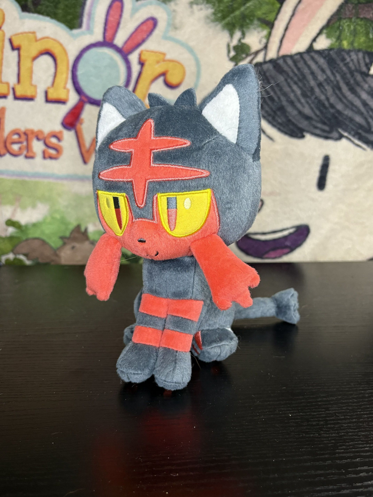
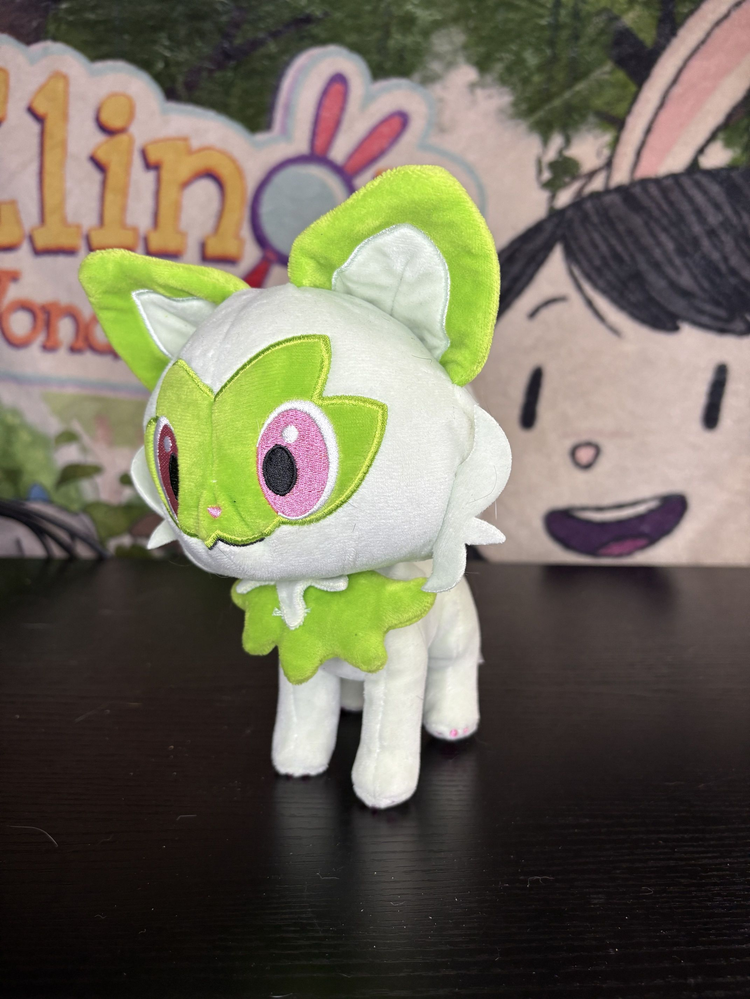
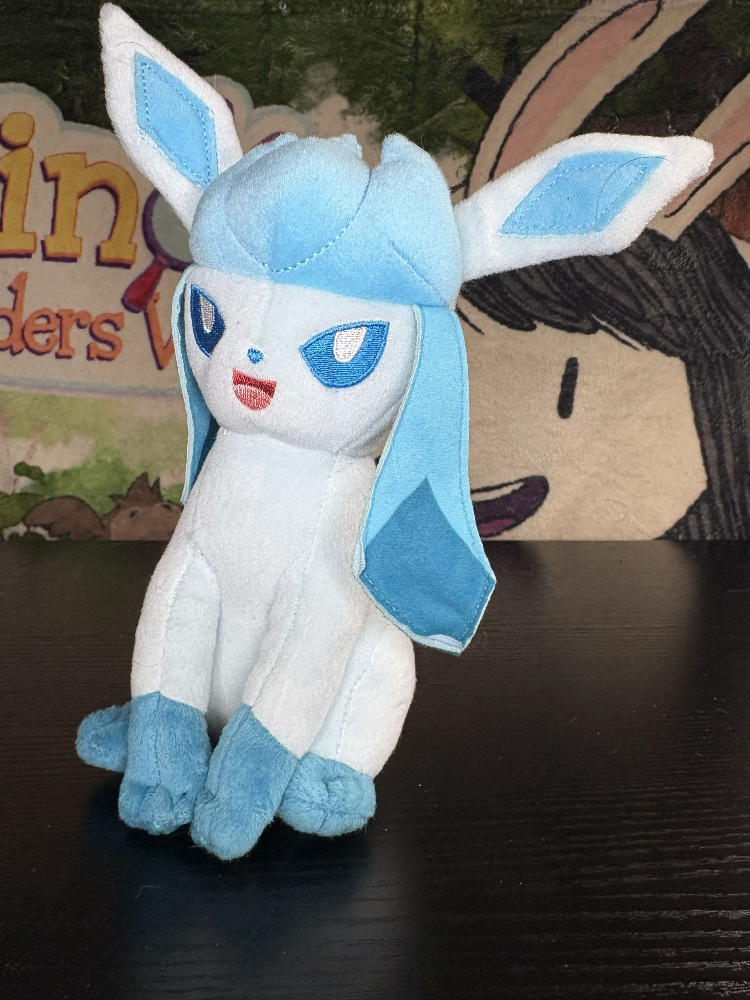
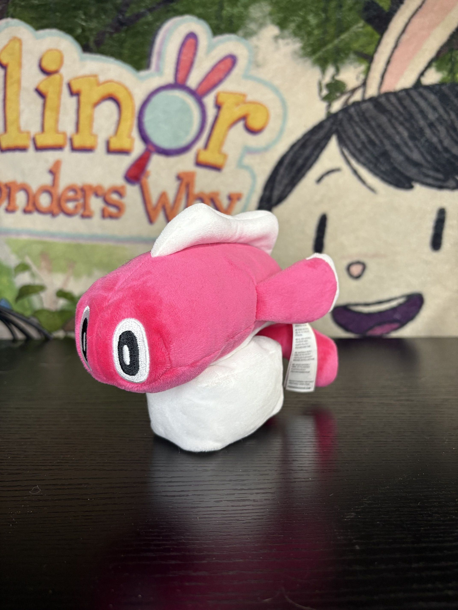
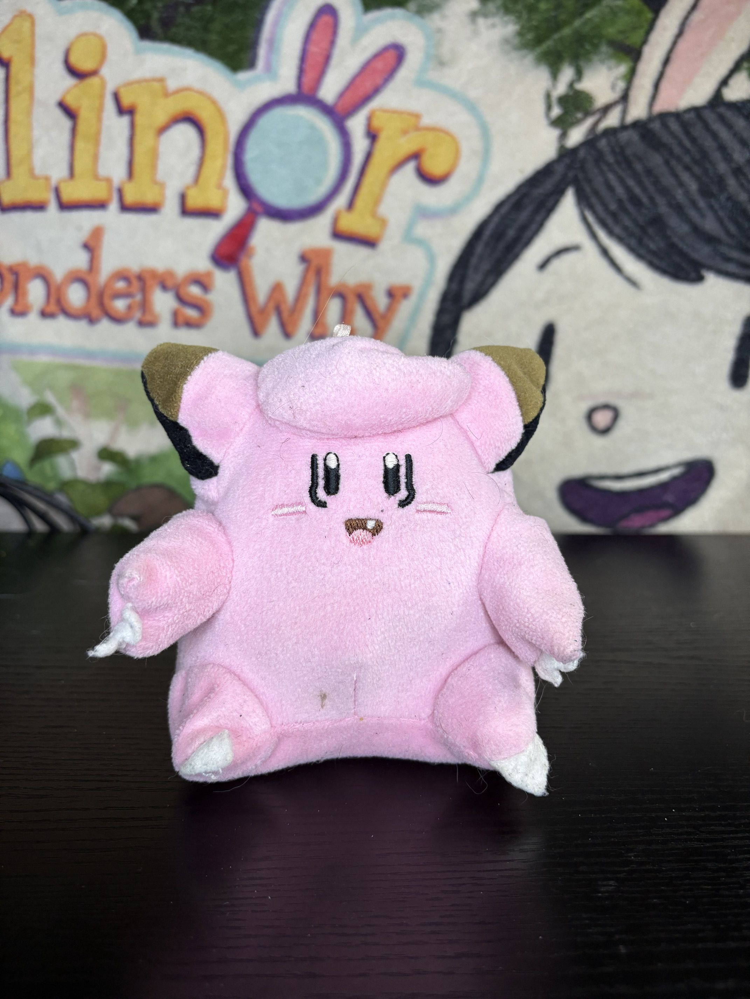

Litten
Release Date: 2017
Company: TOMY
so this is a cute little guy, I love litten such a cute fella! Pokemon plushies i feel are always lacking a bit, and thats kinda why I don't have too many? they always feel like uhhh.. i guess really accurate but a tad boring? I dunno either way this is a good litten. Its a little stiff? but at least it sits by itself so thats pretty cool! the material doesnt Feel too great, but its.. fine!

Sprigatito
Release Date: 2023
Company: Jazwares
I like cats if you cant tell :) One of the cutest starters- I didn't pick them but they are cute! I think i got this at a gamestop and i dunno, Its really cute, he can stand too and def has like.. cardboard in the ears? theyre very stiff. because of this- and its material its not the greatest for like, being on a bed or cuddling but its a better display piece for a very accurate Sprigatito.

Glaceon
Release Date: 2017
Company: TOMY
this is a weird one, so glaceon isnt really my favorite eeveelution, but I got this is a weird way. I got this on like one of the final days of my local Toys R Us, it was very empty and it was the only plush in the electronic sections. I dunno i think i felt bad? he was alone :( that being said though its not.. the greatest? its kinda rough, also kinda stiff and like look at those ears. theyre awful. idk this fella is fine, theyre cute enough but def not a great glaceon.

Farfetch'd
Release Date: 1999
Company: Banpresto
I LOVE THIS BIRD!!! He's one of my favorite mons, I can't even tell ya why hes just a cool guy, probably my favorite gen 1? thats a tough call though.. Either way, I love Pokemon and always have since i was a kid I was there during pokemania- well techically, I was very young but was still into it so hard and I always have a fasination with that time still. Either way- this plush is from then, It's cute its a little off model, thats kinda the charm of older pokemon stuff. it just feels a lil off in such a charming way, its hard to explain but i think most people kinda know the vibes? maybe not Idk.

Tatsugiri
Release Date: 2023
Company: Pokemon Center
Tatsugiri is probably one of my absolute favorite little guys, he's so silly- specifically the pink one. I spent like all of december 2024 trying to get one of these dudes shiny, which took like WAY too long i have BOXES of shiny Tatsugiris for every other color BUT white i only ever got one white one.. and i would absolutely DIE for him-- either wayyyyyy this plush is absolutely amazing. Its soft, its weighted with beads, its a cute size a perfect representation of this little guy in every way!!

Clefairy
Release Date: 1997
Company: Banpresto
this was an awesome goodwill find! Found it probably a few months ago at a local goodwill and it was super awesome to find such an old pokemon plush at a physical store, its a little dirt, not perfect but its pretty peak either way. I dont have much to say? It's just a sick pokemania plush. Material wise its like.. not great lol, its a little rough but uhhh I dunno like i said i have a soft spot for these kinda plushes.

Bootleg Beedrill
Release Date: ?
Company: ?
So this is a bootleg, there was a shop on Ebay that sold a lot of actually really, high quality bootlegs like really really good ones I have a few of them that you'll see here. This is one of them, I dont really know why i got beedrill? im not like a big beedrill lover? it just looked kinda cool? but i hope you can kinda see the quality I was talking about here, this is really good!! Specially for a weirdly niche poke. It's very large, extremely soft too, its well stuffed too! its a crazy good quality for a bootleg! I dont really know if the producers of these are still out there? I've had these for YEARS, i think their name was.. olyfactory?? not sure though..

Bootleg Mega Charizard
Release Date: ?
Company: ?
I got this guy at a local flea market so I know he's def a bootleg- but its really high quality. He's quite big, fairly soft and even has wires in the wings for posing? thats crazy I absolutely adore posability in my plushes. its a very niche thing, but its really fun to have! I dont have much else to add really? it's just a kinda cool plush of charizard. I'm not even sure why i picked mega charizard, I guess i really like X and i did use him as a kid so thats probably why lol.

Bootleg Shiny Mimikyu
Release Date: ?
Company: ?
One of my favorite shiny hunts ive ever done was in Sun and Moon to get a shiny mimikyu, I just loved how it looks and how its kinda like monocolor like ya know old pokemon sprites and stuff, its such a cool idea. I think when i finalyl did catch One i named him Beep and i carried him through many games with me he's very special to me and when i stumbled across a shiny plush of him?? I couldn't say no!! That being said its also.. really good too! Extremely soft, fairly big, and pretty accurate in design! I love you, Beep :)

/Bootleg Shiny Dodrio
Release Date: ?
Company: ?
So another shiny that I had an attachment to, Shiny Dodrio was my main throughout Lets Go Eevee. I think he was named Ghidorah given ya know.. three heads. He's a very large boy, it almost has like.. fur like its kinda just long fur. its really nice tbh! he also has wires! hes posable, its so neat! his body and heads though, are a very firm, and given his spindely body its not a great for cuddling or anything but hes super cool nonetheless!!

Bulbasaur
Release Date: 1999
Company: Hasbro
This guy was actually found like.. in my families attic? we were going up there for some reason it was a few years ago so I dont recall. I think we were seeing if there were critters up there since we heard noises. well.. we had my dad go up there- i didnt wanna do it :p either way he was just up there somewhere! he's incredibly tiny, a lovely little guy hes also like.. the little bumps on his head are just like pushed in so hes just like an egg. Eggasaur. thats all i need to say hes perfect.

Unknown Pikachu
Release Date: ?
Company: ?
so like.. uh what is this? do you know what this is? I got it at a goodwill, hes quite large, very soft, kinda understuffed and feels more like a pillow? I.. couldnt find anything like this online and I dont really know who or what it is. genuinely please someone tell me is this a bootleg? is it real? a prize/carnival plush? who made it?????